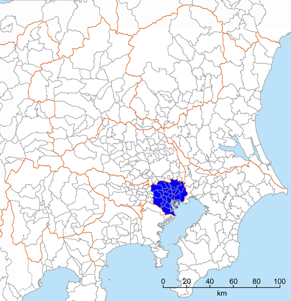
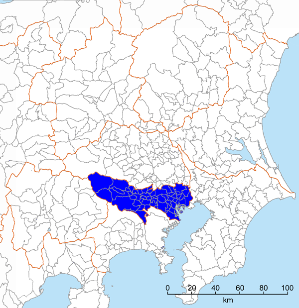
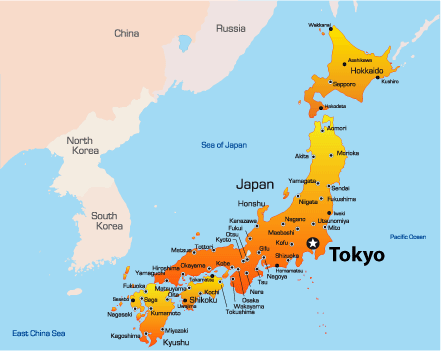
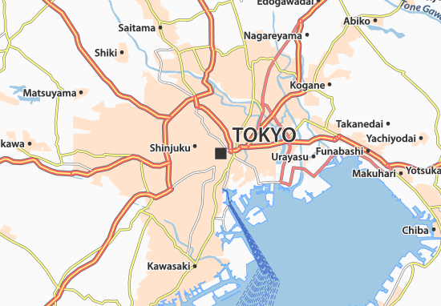

--About Me--
--Basic Information of Tokyo--
Tokyo, Japan’s busy capital,
mixes the ultramodern and the traditional,
from neon-lit skyscrapers to historic temples.
Area: 2,188 km²
Metropolitan area: 13,572 km²
Weather: 25°C, 78% Humidity
Population: 9.273 million(2015)
(population: 925 million)

(population: 1361 million)

tokyo map1

tokyo map2

google map API
exact location of Tokyo